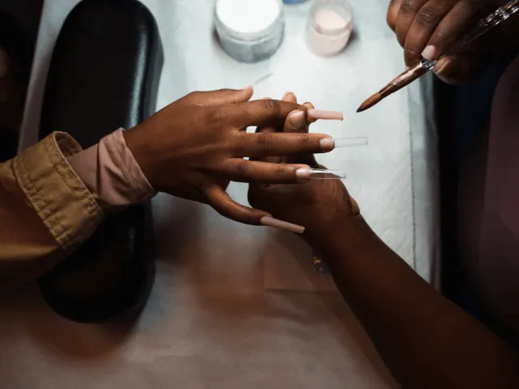
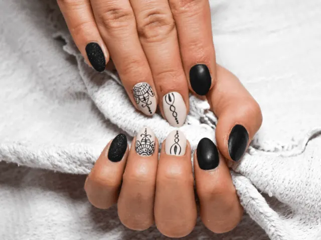
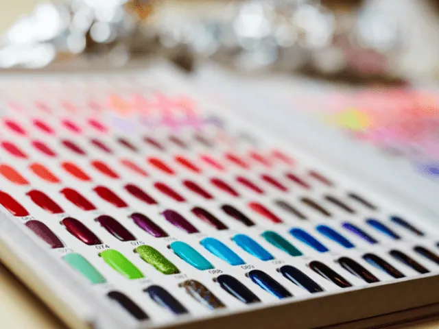

De juiste nagelsalon in Nijmegen kiezen? Tips hier!
Gepubliceerd op 11 september 2023, bijgewerkt op 26 februari 2024
Onderdeel van de gids Nagelsalon in Nijmegen

Welkom bij onze blog voor het vinden van de perfecte nagelsalon in het prachtige Nijmegen! Of je nu je nagels wilt laten verzorgen, verlengen of versieren, het vinden van de juiste nagelsalon is essentieel voor een prachtig resultaat. Maar met zoveel opties in Nijmegen, hoe maak je de beste keuze? Maak je geen zorgen, we staan voor je klaar met waardevolle tips en een vleugje humor om je door dit nagellak-doolhof te loodsen. Dus leun achterover, ontspan en geniet van deze speelse en informatieve reis!

De nagel-scoop:
Nijmeegse Hotspots Laten we beginnen met het verkennen van de nagelsalon scene in Nijmegen. Deze stad zit boordevol leuke en trendy salons die je nagels tot in de puntjes kunnen verzorgen. Van chique boetieks tot gezellige studio’s, er is voor elk wat wils. Vergeet niet om te kijken naar beoordelingen en recensies van klanten. Het laatste wat je wilt, is een salon binnenlopen waar ze je nagels behandelen alsof ze een oude houten tafel schuren. Dus duik in de Nijmeegse hotspots en ontdek waar het allemaal gebeurt!
Hygiëne en netheid: laat je nagels niet besmet raken!
Je wilt natuurlijk niet alleen mooie nagels, maar ook gezonde nagels. Daarom is het belangrijk om aandacht te besteden aan hygiëne en netheid in de nagelsalons die je overweegt. Let op hoe schoon de salon is en of ze werken volgens de juiste hygiënische normen. Zijn de instrumenten gesteriliseerd? Wordt er gewerkt met schone handdoeken en schorten? Als je een salon binnenstapt en je krijgt het gevoel dat je een aflevering van “Hoe schoon is je nagelsalon?” bent binnengewandeld, ren dan zo snel mogelijk naar de volgende salon!

Meesterlijke manicures: ervaar het vakmanschap
Als je een bezoek brengt aan een nagelsalon, wil je natuurlijk dat je nagels er fantastisch uitzien. Een geweldige nagelstylist zal niet alleen je nagels mooi vormgeven, maar ook aandacht besteden aan de kleinste details. Van de perfecte nagellakapplicatie tot het vakkundig vijlen en polijsten, het draait allemaal om het vakmanschap. Vraag naar de ervaring en opleiding van de nagelstylisten in de salon. Zorg ervoor dat je je nagels toevertrouwt aan degenen die hun nagelkunsten tot in de puntjes beheersen!
Prijzen en pakketten: nagels om je portemonnee niet te breken
Terwijl je je nagels laat verwennen, wil je natuurlijk ook je portemonnee niet te zwaar belasten. Kijk daarom goed naar de prijzen en pakketten die worden aangeboden in de nagelsalons. Sommige salons bieden aantrekkelijke arrangementen aan, zoals manicures in combinatie met pedicures of speciale kortingen voor regelmatige klanten. Vergelijk de prijzen en kies een salon die betaalbaar is en tegelijkertijd kwaliteit biedt. Zo kun je genieten van prachtige nagels zonder dat je bankrekening begint te huilen.

In Nijmegen mag je deze hot-nail-spots niet overslaan
Lyna Nails
Lyna Nails is een trendy nagelsalon in Nijmegen, gespecialiseerd in het creëren van eigentijdse nagelstijlen. Met hun oog voor detail en passie voor mode, zorgen ze ervoor dat je nagels de show stelen. Klanten waarderen hun vriendelijke service en de unieke designs die ze aanbieden.
The Nail Art Club
Bij The Nail Art Club draait alles om de kunst van nagelversiering. Deze creatieve salon in Nijmegen biedt een breed scala aan unieke nail art-opties, van gedurfde patronen tot delicate details. Klanten loven hun artistieke vaardigheden en de mogelijkheid om hun persoonlijkheid tot uitdrukking te brengen via hun nagels.
Chez Lotfia
Chez Lotfia is meer dan alleen een nagelsalon in Nijmegen; het is een plek waar klanten een totale verwenervaring kunnen verwachten. Met een combinatie van professionele nagelbehandelingen en ontspannende schoonheidsdiensten, laten ze je je mooi en verjongd voelen. Klanten waarderen de luxe sfeer en de aandacht voor detail.
By de pedicure
By de pedicure is dé plek in Nijmegen waar je terecht kunt voor deskundige voetverzorging en pedicures op maat. Met een focus op comfort en gezondheid, bieden ze professionele behandelingen die je voeten en nagels in topconditie houden. Klanten prijzen hun zorgzame aanpak en de verlichting die ze bieden voor vermoeide voeten.
Conclusie
Nu ben je klaar om de juiste nagelsalon in Nijmegen te kiezen. Met onze tips in gedachten kun je met vol vertrouwen op zoek gaan naar een salon die perfect bij je stijl en behoeften past. Onthoud dat het belangrijk is om te letten op de Nagel-Scoop, hygiëne en netheid, meesterlijk vakmanschap en betaalbare prijzen. En vergeet niet om plezier te hebben tijdens je zoektocht! Dus gooi je nagels in de lucht en geniet van de geweldige nagelsalonervaringen die Nijmegen te bieden heeft!